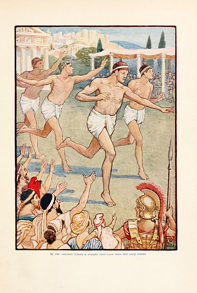
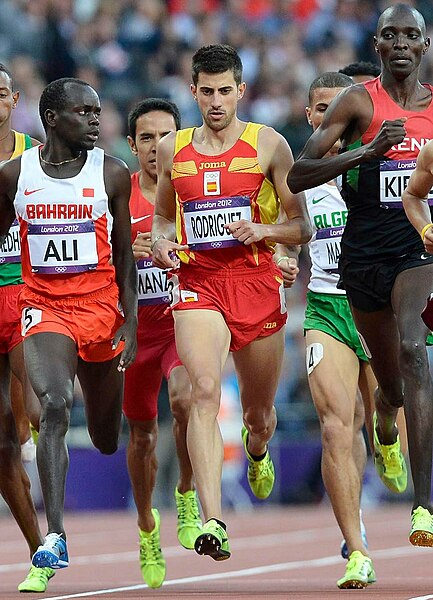

Juegos Olímpicos antiguos
En la antigüedad constituían festividades de carácter religioso, cultural y deportivo que tenían lugar en Grecia en honor a los dioses olímpicos. Estos eventos comprendían una amplia gama de competencias, desde carreras a pie hasta combates de lucha, pasando por pruebas como el Pentatlón, que incluía el lanzamiento de jabalina, el lanzamiento de disco y el salto de longitud, así como disciplinas como el pancracio y las carreras de carros. Además de las actividades físicas, también se incluían expresiones artísticas como la música, la poesía y la danza.
Los Juegos Olímpicos en la antigua Grecia se celebraron desde el año 776 aC, una fecha considerada tradicionalmente como su fundación, aunque algunos historiadores, como Leveque (1968), señalan que esta fecha marcó más bien la reglamentación definitiva de los juegos hasta el año 393 dC. Estos eventos estaban reservados exclusivamente para los ciudadanos hombres, quienes se preparaban durante años en los gimnasios para competir en las distintas disciplinas. Es importante destacar que, en esa época, solo las mujeres solteras tenían permitido presenciar los juegos, mientras que las mujeres casadas no tenían acceso a ellos.
Estos juegos periódicos tenían un significado profundo en la sociedad griega, ya que estaban dedicados a Zeus, el rey de los dioses. Se llevaban a cabo cada cuatro años en Olimpia, una ciudad ubicada en el Peloponeso. La realización de los juegos implicaba un alto grado de organización y compromiso por parte de las autoridades y los participantes. Es relevante destacar que Atenas también celebraba sus propios juegos en honor a Atenea, la diosa de la sabiduría, conocidos como los Panatenaicos.
Sin embargo, la tradición de las Juegos Olímpicos sufrió un golpe significativo con la invasión de los romanos a Grecia en el año 456 a.C. Con el tiempo, el espíritu olímpico se debilitó y las competiciones empezaron a ser vistas más como simples combates. Finalmente, la última edición de la era antigua tuvo lugar en el año 393 a.C., cuando el emperador Teodosio I prohibió la adoración a los dioses y canceló los juegos, marcando así el fin de esta importante tradición en la antigua Grecia.

{kind=link}
Juegos Olímpicos modernos
Los Juegos Olímpicos modernos, gracias al impulso del Barón Pierre de Coubertin, marcaron un hito en la historia del deporte y la cultura mundial. En abril de 1896, la ciudad de Atenas fue testigo de la reanudación de esta tradición milenaria en su forma contemporánea.
El Barón de Coubertin, un noble francés dedicado a la pedagogía y apasionado del deporte, tuvo la visión de revivir los antiguos Juegos Olímpicos, que únicamente eran disputados por atletas griegos en los llamados Juegos de Zappa. Su propuesta de crear un evento deportivo internacional fue presentada en 1894 durante un congreso en la Universidad de Sorbona.
Si bien el proceso de selección de la sede inicialmente carece de claridad, Atenas fue finalmente elegida como la ciudad anfitriona. Esta elección, como una recreación de los Juegos Olímpicos originales, tuvo un profundo significado simbólico. Además, el apoyo de la familia real griega y las conexiones del Barón con la nobleza europea fueron determinantes para obtener el respaldo de países que inicialmente eran reticentes a la idea.
En 1894, el Barón de Coubertin propuso la creación del Comité Olímpico Internacional (COI) durante el Congreso Atlético Internacional de París. El objetivo del COI era reunir a atletas aficionados de todo el mundo para promover la paz y la convivencia entre los pueblos.
Los primeros Juegos Olímpicos modernos se llevaron a cabo en Atenas del 6 al 15 de abril de 1896. En este evento participaron 241 atletas varones de catorce países diferentes, principalmente europeos, compitiendo en diez deportes distintos.
Entre los deportes destacados en estos primeros Juegos Olímpicos modernos se incluían Atletismo, Ciclismo, Esgrima, Gimnasia, Tiro, Natación, Tenis, Levantamiento de pesas y Lucha. Países como Grecia, Alemania, Estados Unidos, Reino Unido, Francia, Dinamarca, Suiza, Austria, Australia, Bulgaria, Chile, Hungría, Italia y Suecia fueron parte de esta histórica celebración deportiva.
La inauguración de los Juegos Olímpicos Modernos no solo marcó el renacimiento de una tradición centenaria, sino que también sentó las bases para la celebración periódica de este evento a escala global, uniendo a personas de diversas culturas y naciones en el espíritu de la competición y la camaradería deportiva.

Foto de Kipchacal disponible en Wikimedia Commons
{kind=link}
El pancracio era una competición deportiva de los Juegos Olímpicos Antiguos, una combinación de boxeo griego antiguo con patadas, semejante al kickboxing, y lucha, aunque se permitía prácticamente cualquier ataque con cualquier miembro del cuerpo, similar a las actuales artes marciales mixtas, y considerablemente con menos restricciones que estas.